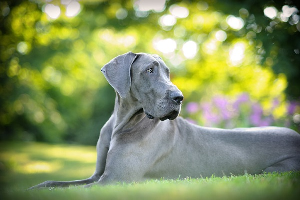

Esse cachorro de altura peculiar é ámavel e adora estar em família! Quem vê o Dogue Alemão pela primeira vez fica impressionado com o porte nada comum. Mas o que ele tem altura, tem de companheirismo. Trata-se de um cão que tem muito bom humor e se apega facilmente à família. O apreço pela presença constante do tutor é bastante perceptível. Portanto, quem pensa em adotar esse peludo, precisa dedicar tempo, pois ele sempre vai querer muita atenção. Além de dócil e de fácil trato, é um animal corajoso e autoconfiante. Não é à toa que seja tão popular!
Cheio de energia, o cão Dogue Alemão exige muitas atividades diárias para manter a saúde sempre em ótimo estado. Portanto, os exercícios físicos são fundamentais. Caminhadas de duas a três vezes por dia, com percursos de pelo menos 2 km, fazem toda a diferença. Toda essa disposição talvez possa assustar futuros tutores. Contudo, esse cachorro tem a natureza bastante calma e gentil, o que faz com que as atividades se tornem tarefas mais tranquilas de serem feitas.
Por ser tão calmo, ele também é um tanto silencioso e só costuma latir em situações específicas, como em brincadeiras ou momentos de alegria intensa. Preocupação comum entre os tutores, o Dogue até pode ficar sozinho, porém, por pouco tempo. Além de preferir a companhia familiar, ele também vai acabar fazendo certa bagunça em momentos solitários, seja por irritação ou por brincadeiras inventadas por ele mesmo.
Fizemos um gráfico nivelando de 0 a 5 as características da raça, veja a baixo!
Por ser tão grande, o Dogue Alemão possui atributos físicos bem robustos. Trata-se de um cão super resistente e musculoso que possui o corpo longo, com a silhueta bem delineada e proporcional. As pernas são compridas e fortes, assim como as patas. Com a cabeça sempre bem expressiva, ele tem orelhas caídas quando não está em estado de alerta. Os olhos são ovais e com tonalidade escura. No focinho, os lábios grossos são bastante aparentes.
Por ser um cachorro ativo, o Dogue Alemão precisa de cuidados importantes com a higiene. O banhos precisam ser dados regularmente, mesmo que possam ser uma tarefa um tanto difícil, tanto pelo tamanho do animal, como pelo comportamento, que mesmo quando adulto, ainda carrega traços infantis. O uso de produtos adequados é uma precaução fundamental. Shampoos, condicionadores e outros cosméticos apropriados para a pelagem e pele fazem toda a diferença. Além de deixarem o pet mais limpinho e cheiroso, fazem bem à saúde dos pelinhos. Em geral, a raça é bastante saudável e resistente, por isso, não demanda grandes preocupações nesse sentido, principalmente se manter uma rotina adequada de exercícios físicos, alimentação balanceada e, claro, muito amor e carinho. Mas, como qualquer outro cão, os Dogues estão sujeitos a alguns problemas genéticos de saúde. Complicações no quadril, como má formação e dores, podem acontecer e se agravarem com o tempo. Adversidades no estômago, nos ossos e ganho excessivo de peso também podem ocorrer. Em todo caso, o ideal é manter as consultas com o veterinário sempre em dia.
Além de serem super fofinhos e espertos, os filhotes demandam responsabilidades específicas para essa fase tão importante. É durante essa faixa etária que eles vão descobrir o mundo e aprender lições fundamentais. Portanto, os tutores devem se atentar aos exercícios diários, com a frequência e o tempo das atividades indicados pelo veterinário. As refeições também são diferenciadas e devem ser recomendados pelo profissional, já que esse cão cresce de forma mais acelerada. Antes de receber o Dogue Alemão filhote, o tutor deve adaptar o novo ambiente do animal, com proteção para acidentes em escadas ou com objetos inapropriados pela casa. Além disso, é preciso organizar muito bem a rotina, com atenção especial ao bichinho.